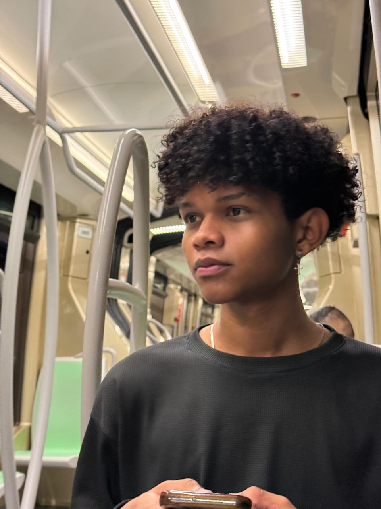

"El modelaje no se trata solo de belleza, sino de actitud, confianza y estilo."
yo siempre tuve, el sueño de entrar al modelaje
"Fabian Gonzalez"
El Modelaje: Arte, Expresión y Pasión
El modelaje es más que lucir ropa bonita; es una forma
de arte donde la actitud, la confianza y la expresión
corporal son clave. A través de pasarelas, sesiones
fotográficas y campañas publicitarias, los modelos
transmiten emociones y representan estilos únicos.
Con disciplina y autenticidad, cualquiera puede destacar
en este mundo lleno de creatividad y oportunidades. 📸
El modelaje es un mundo apasionante lleno de oportunidades para quienes están dispuestos a esforzarse y creer en sí mismos. Más allá de la belleza exterior, lo que realmente define a un buen modelo es su personalidad, actitud y determinación.
Si tu sueño es convertirte en modelo, no dejes que el miedo o los obstáculos te detengan. Sigue aprendiendo, creciendo y luchando por lo que quieres. El modelaje no es solo cuestión de verse bien, sino de transmitir confianza, inspirar a otros y dejar una huella en la industria
🌟 No esperes el momento perfecto, crea tu propia oportunidad y brilla en la pasarela de la vida. 💃📸✨

🌟 Sigue Tu Sueño: El Modelaje Te Espera 🌟
hola mi nombre es, Fabian David Gonzalez Perez
soy modelo y te quiero explicar maso menos los que es entrar ala industria
🌟 El Modelaje en Adolescentes: Un Mundo de Oportunidades y Desafíos 🌟
Para muchos jóvenes, el modelaje es una forma de expresión y una oportunidad para desarrollar confianza
en sí mismos. Además, la exposición en redes sociales ha hecho que cada vez más adolescentes vean en
esta profesión una posibilidad real de éxito. Algunas razones por las que el modelaje es atractivo incluyen:
✔ Creatividad y expresión personal:A través de la moda y la fotografía, los adolescentes pueden mostrar su personalidad y estilo único.
✔ Oportunidades profesionales:Muchos modelos jóvenes logran contratos con marcas reconocidas y pueden hacer del modelaje una carrera a largo plazo
✔ Viajes y experiencias nuevas: Participar en desfiles y sesiones de fotos permite conocer nuevos lugares y personas de diferentes culturas.
✔ Desarrollo de habilidades: El modelaje ayuda a mejorar la postura, la confianza y la capacidad de comunicación.
🚀 Requisitos y retos del modelaje en adolescentes:
Aunque puede parecer un mundo glamuroso, el modelaje juvenil tiene exigencias que deben considerarse:
🔹 Disciplina y constancia:Los modelos adolescentes deben cumplir con horarios de castings, sesiones de fotos y entrenamiento.
🔹 Cuidado personal: Mantener una alimentación saludable y hacer ejercicio es importante, pero siempre de manera equilibrada y sin poner en riesgo la salud.
🔹 Equilibrio entre estudios y modelaje: La educación debe seguir siendo una prioridad, por lo que es clave organizarse bien.
🔹 Manejo de la presión y autoestima:Es fundamental que los adolescentes tengan apoyo emocional, ya que la industria puede ser exigente en cuanto a estándares de belleza y competencia.
🌍 El impacto de las redes sociales en el modelaje adolescente
Hoy en día, plataformas como Instagram y TikTok han cambiado la forma en que los jóvenes entran al mundo del modelaje. Muchos descubren oportunidades gracias a su presencia digital, pero también deben ser cuidadosos con la presión social y la imagen que proyectan en internet.
🏆 Consejos para adolescentes que quieren ser modelos
Si estás interesado/a en el modelaje, aquí tienes algunas recomendaciones:
🔹 Investiga y aprende:Conoce sobre agencias de modelaje serias y evita estafas.
🔹 Confía en ti mismo/a:La seguridad y autenticidad son clave para destacar.
🔹 Busca apoyo familiar:Es importante contar con el respaldo de padres o tutores.
🔹 No descuides los estudios:La educación siempre debe ser una prioridad.
🔹 Cuida tu bienestar: La salud física y mental es lo más importante.
💬 Conclusión
El modelaje en adolescentes puede ser una experiencia enriquecedora llena de oportunidades, pero también requiere responsabilidad y preparación. Con el apoyo adecuado y un enfoque saludable, los jóvenes pueden explorar este mundo sin comprometer su bienestar ni sus estudios.
🌟 El modelaje no solo es cuestión de belleza, sino de actitud, esfuerzo y autenticidad. ¡Si sueñas con ello, prepárate y ve por ello! 💃📸✨